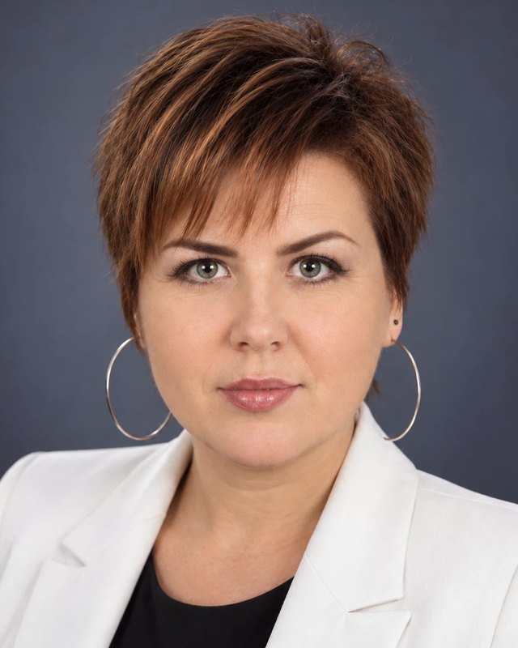

№ 00002449
У Реєстрі страхових посередників Національного банку України — № 00002449 від 20.03.2025.
Команда експертів у сфері страхування з досвідом роботи більше 10-ти років. Ми створили бюро максимально комфортних сервісів для компаній, які турбуються про зменшення ризиків власного бізнесу. Працюємо, щоб робити зрозумілим та ефективним страхування, яке вам потрібно.
У Реєстрі страхових посередників Національного банку України — № 00002449 від 20.03.2025.
Медичне страхування — 75% нашої роботи, логістика — 25%. Це сервісні види, де брокер потрібен щодня, а не раз на рік.
Що ми робимо понад програму ↗Базуємося в Києві, працюємо з компаніями по всій Україні.
Ми організовуємо тендер, пояснюємо відмінності між пропозиціями та даємо рекомендацію. Страхову компанію обирає клієнт — і має бачити, на чому цей вибір побудований.
Зводимо покриття, ліміти, винятки, вартість і сервіс у зрозумілий для порівняння вигляд.
Допомагаємо запустити програму, працювати зі змінами та складними страховими зверненнями.
Що входить у супровід ↗Рішення про покриття чи виплату ухвалює страхова компанія. Наша роль — супровід і представництво інтересів клієнта.
Що робити, якщо відмовили у виплаті ↗Партнери Бюро та керівники напрямів. За кожною корпоративною програмою закріплена команда супроводу.

Мій досвід роботи дозволяє бути впевненим, що інструмент страхування в Україні працює. Я вірю, що страхові брокери, представляючи частину страхового ринку, несуть відповідальність за ефективність використання цього інструменту.
Університет Technion, Хайфа · Project Management
Інститут післядипломної освіти та бізнесу · Курс організації діяльності страхових та перестрахових брокерів № 7963 від 09.04.2014

Страхування в українських реаліях — це не просто інструмент управління ризиками. Ми покращуємо або знаходимо нові рішення на стику раціональності та інновацій, не забуваючи, що сервіс — це додаток до грамотно проаналізованого та застрахованого ризику.
Національний медичний університет імені А.А. Богомольця · лікар невідкладних станів, лікар загального профілю
Понад 17 років у медичному страхуванні. Очолює групу супроводу, яку Бюро формує під кожного клієнта.

Я бачила медицину очима медсестри, менеджера і юриста. Тому знаю: добра програма ДМС — це та, якою людина вміє скористатися саме тоді, коли їй погано.
Міжнародний Соломонів університет · спеціалізація медичне право
Міжрегіональна академія управління персоналом · спеціалізація медичний та фармацевтичний менеджмент
Київський міський медичний коледж № 4 · спеціалізація сестринська справа

Вірю, що не людина вибирає страхування, а страхування вибирає людину, щоб вчасно надати їй фінансовий захист. Ефективне використання інструменту страхування дозволяє зменшити неприємні наслідки у непередбачуваних ситуаціях.
Донецький національний університет · математичний факультет, кафедра теорії ймовірності та статистики. Магістр страхування.

Я вірю, що тільки ми несемо відповідальність за своє життя та свій бізнес. З полісом страхування негативний вплив стає контрольованим. А що може бути краще для топменеджера, ніж можливість контролювати ризики?
Харківський національний технічний університет · економіка підприємств
Обговоримо вашу ситуацію, потрібну інформацію та наступні кроки. Безоплатно, онлайн або особисто в Києві.